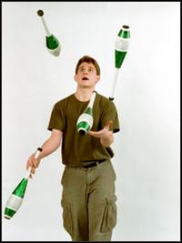

A comic jack of all ... clubs
| 
Jake Abernethy, a 19-year-old UMass math major,
gets his big break as a performer Saturday, when
he opens for Sinbad at the Mullins Center with the
juggling and comedy routine he honed on the
streets of Boston. AMELIA LINCOLN photo
|
By LARRY PARNASS, Staff Writer
Thursday, December 14,
2000 -- (AMHERST) - At 2 p.m.
Saturday, Jake Abernethy will sit for what he hopes
won't be too much of a trial: a final exam on
electricity and magnetism in a University of
Massachusetts physics course.
A few hours later, Abernethy, who's somewhat of a
charged particle himself, will enter what he hopes won't
be a trial, for him or anyone else. He'll take the stage
at the Mullins Center with his unicycle, his juggling
clubs, his flaming torches and his ladder.
As the opening act for an appearance by the comic Sinbad, Abernethy
will be there to prime the laugh pump.
A math major?
He's got no theorem to explain it, only a medal whose
enamel has already worn off.
In early October, Abernethy, who is 19, was named the
funniest student at UMass in a traveling Comedy
Bake-Off, held at the Fine Arts Center and sponsored by
iCast.com. When he walked onto that stage, Abernethy was
a study in jitters, though that, it turned out, was part
of the act. He improvised his way through a manic five
minutes of juggling and audience-baiting.
"I'm going to try and entertain you," he told the
crowd haltingly.
He waited a beat. "Why is that funny?" he demanded.
When an audience member holding a pin tossed it back,
it fell to the stage. Abernethy gave him a face.
"I'll get it," he said.
The concert hall that day held a few hundred people.
This weekend's gig may put him before thousands. That's
a big jump from the gatherings of a hundred or so people
he's used to drawing to performances over the past few
years at Faneuil Hall in Boston.
"I'm kind of nerved-up about it - and will get more
so before the show," Abernethy said of Saturday's show.
"This is by a huge order of magnitude the biggest thing
I've done. And it might be the peak of my career."
Is he joking? Read on.
At this fall's comedy contest, Abernethy, who grew up
in Amherst, seemed to get the crowd going in earnest
with a little device honed as a street performer. Rather
than suffer a moment of silence after a juggling club
fell, he leaned into the darkness before him.
"Boo me!" he insisted.
They laughed.
For a juggler, he talks a lot in performance. Or as a
comic, he spends a lot of time tossing props. As an
entertainer, Abernethy knows it's not labels that
matter, it's laughter.
Boston boot camp
Though he's been named the funniest student at UMass
(a title Abernethy nicely regards as laughable in
itself), people in classrooms haven't always thought him
funny - or perhaps too much so. A little blowup in math
class in 10th grade, while he was a student at Amherst
Regional High School, led him to leave that campus and
spend half a year in home schooling with his mother,
Meryl Nass.
When she moved away to open a medical practice in
Maine, Abernethy went to live in Acton with his father,
John, a physician with the U.S. Department of Veterans
Affairs. The exiled class clown found his way to classes
at Harvard University's extension program and to the
streets, where he honed his teen-age love of juggling.
Boston was his boot camp.
Even after an audition earned him a shifting berth
inside the Faneuil Hall market area, Abernethy says he
didn't seem able to hold the crowds that gathered - and
that's key to getting the dollar bills flowing. It
wasn't enough to keep five clubs twirling in midair. By
watching experienced performers work their crowds,
Abernethy found his shtick.
He's the nervous, shy guy who may or may not make a
spectacle out of himself. The prospect of a crash and
burn seems to keep people lingering. Oh, and he's
clean-cut, talks 80 miles an hour and leaks boyish
charm. Just to darken it a tad, he sometimes gets a bit
cranky.
"I like that kind of character. They see me as
nervous and probably think I'm not a good juggler. Right
then, I've got an advantage," he said. "If I'm not
funny, I still did the trick. The truth is, I hide
behind the fact that I'm a juggler."
Ann Rasmussen, the Mullins Center's sales and
marketing manager, said she and others saw similarities
between Sinbad and Abernethy. "Kind of the way they
approach the audience. It's a very energetic, very
physical presence," she said. "We thought it was the
perfect fit." And both performers, she notes, are not
"overly adult" in the content or tone of their shows.
To boost ticket sales to college students, the center
is discounting tickets for upper-arena seats with good
visibility. They now cost $16.
Key to comedy
Abernethy says he's learned that in the first few
moments of a performance, winning a few scattered laughs
is key. It builds confidence in the other people
watching. His kind of comedy lies not in what the
individual finds funny, but what an audience as a whole
considers humorous.
"You can prepare for a stage show, but you can't
prepare for a street show," he said. "Every single day,
it's a different show. The audience is different every
day. Knowing how to work with that is difficult."
Abernethy's been at UMass long enough now (three
years) to know the student audience. He knew to slip
several jokes in, while juggling at October's contest,
that were easily, but lightly, taken as sexual
references.
Behind the dithering of the shy guy, there's an awful
lot of practice in the physicality of his trade. In a
photo shoot in the Gazette studio, he adjusted
immediately to a low ceiling and juggled clubs while
balancing a unicycle on his nose. He juggled while
riding. He executed a spin while juggling and didn't
miss a club. ("It's a pirouette," he said, "which means
'really difficult' in French.")
His desire to dive even deeper into mathematics, his
major, may soon take him to MIT. He postponed an offer
to attend that school this fall, saying he wanted to
finish projects in Amherst, including work as a teaching
assistant, volunteer hours in the public schools and
leadership of the UMass juggling team. Last spring, he
pursued math studies in Budapest, Romania.
As for Saturday's show, Abernethy says he'll try to
prepare as little as possible. He'll build his act from
what feels right, right there, under the lights in the
cavernous arena.
He'll go home happy, he suspects, and $500 richer.
Will his 20 minutes at the Mullins be a step up and on -
or just an memorable night?
He counts himself lucky. "I have friends who tell
math jokes," he said. "That's pretty sad."
Jake Abernethy will perform Saturday at 8 p.m. at
the Mullins Center, opening for Sinbad. Tickets are $31
and $26. Discounted seats for upper rows are $16. For
reservations, call the center's box office at 545-0505
or Ticketmaster at (413) 733-2500.